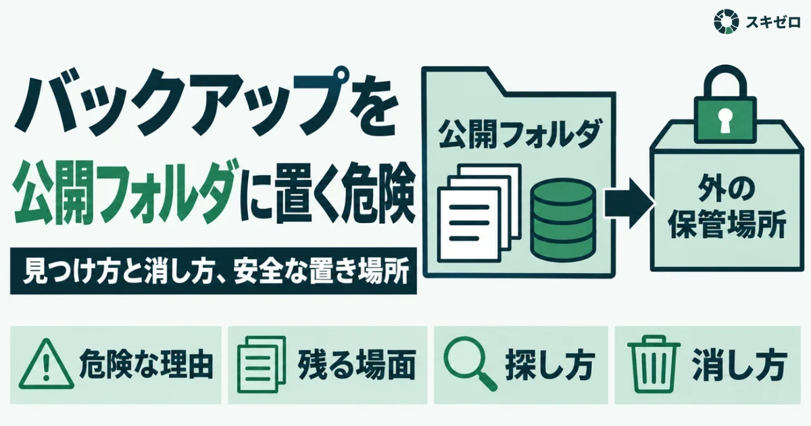
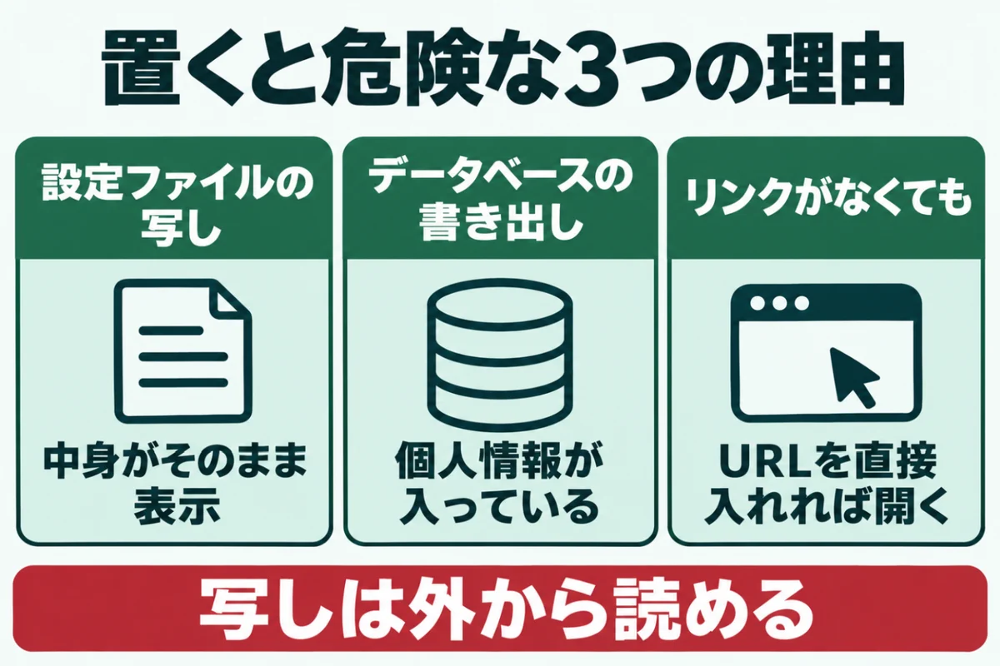
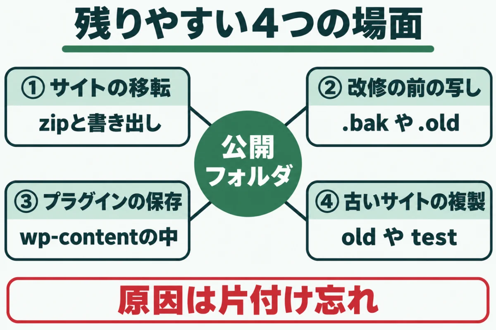
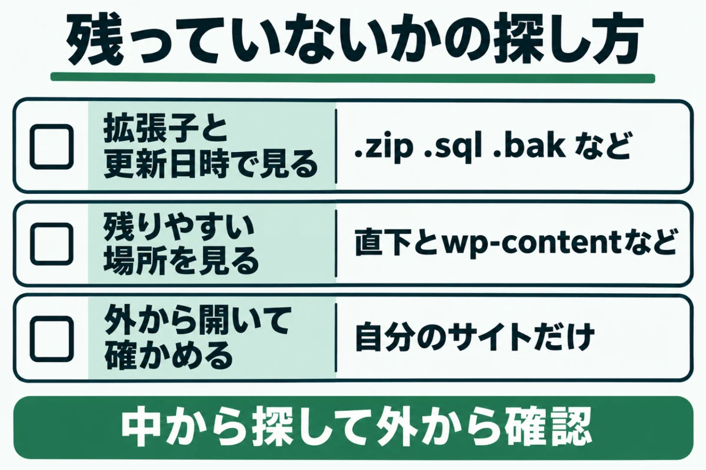
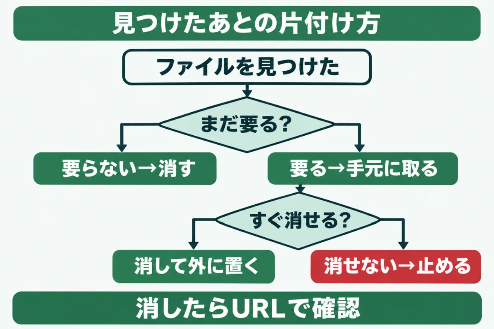
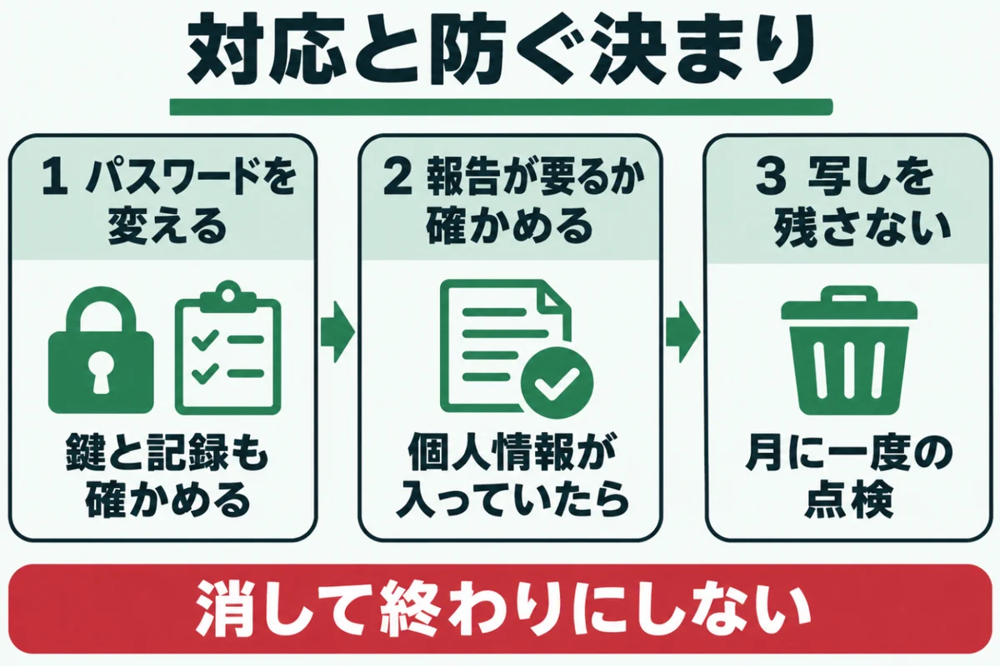

バックアップファイルを公開フォルダに置く危険見つけ方と消し方、安全な置き場所

サイトの移転や改修のときに作ったzipや写しを、サーバーに置いたままにしていませんか？
作業のために作ったバックアップファイルは、終わったあとも公開フォルダに残りがちです。置き場所を誤ると、パスワードやお客さまの情報が外から読める状態になります。
この記事は、バックアップファイルの置き場所の誤りに絞ってまとめました。何が漏れるのか、どこに残りやすいのか、探し方と片付け方、防ぐ決まりの順に紹介します。
もとにしたのは、IPAやOWASP、WordPressの公式の資料です。運営者の自社サイトでの点検で分かったことも加えました。サーバーの管理画面に入れるようにしてから読み進めてください。
バックアップファイルを公開フォルダに置くと危険な理由

バックアップファイルを公開フォルダに置くと、中身をだれでも取り出せる状態になります。公開フォルダとは、URLで開けるファイルを置く場所のことです。
IPAは、重要な情報を入れたファイルを、インターネットから届かない場所に保管するよう求めています。不要なファイルは削除する必要がある、という立場です。危険な理由を3つに分けて見ていきましょう。
設定ファイルの写しは、中身がそのまま表示される
設定ファイルの「wp-config.php」には、データベースのパスワードが書かれています。元のファイルは、開いてもプログラムとして動くだけで、中身は表示されません。ところが、名前の末尾を「.bak」や「.old」に変えた写しは扱いが変わるのです。写しは、ただの文字として中身が表示されることがあります。OWASPの検査の手引きも、末尾を変えた写しから元のプログラムが読まれる例を挙げました。データベースに入るための情報が、そのまま外へ出る形になるでしょう。
- 参考：wp-config.php｜WordPress Developer Resources
- 参考：Review Old Backup and Unreferenced Files for Sensitive Information｜OWASP Web Security Testing Guide
データベースの書き出しには、個人情報が入っている
データベースを書き出したファイルは、「.sql」や「.gz」といった名前になります。公式ハンドブックによると、データベースにはすべての投稿とコメントが入っているのです。利用者ごとのログイン名、メールアドレス、パスワードも保存されます。パスワードは元が分からない形に変えてありますが、漏れてよい情報ではありません。書き出しファイル1つで、サイトの中身が丸ごと渡ると考えてください。問い合わせを保存するプラグインを使っていれば、送った人の個人情報も含まれるでしょう。
- 参考：Backups｜WordPress Developer Resources
- 参考：wp_insert_user()｜WordPress Developer Resources
- 参考：Flamingo｜WordPress.org
リンクがなくても、URLを直接入れれば開ける
「どこからもリンクしていないから見つからない」と考える人は多いでしょう。IPAの資料は、この考えをはっきり否定しています。公開用のフォルダにあるファイルは、リンクがなくても外から直接指定すれば閲覧されるという説明です。写しや書き出しのファイルには、だれもが付けそうな名前が使われます。OWASPの手引きにも、ありがちな名前を順に試して探す検査の方法が載りました。隠したつもりのファイルほど、機械的に探されると考えてください。検査に使える方法は、悪意のある相手にも使えるからです。
- 参考：安全なウェブサイトの作り方｜IPA
- 参考：Review Old Backup and Unreferenced Files for Sensitive Information｜OWASP Web Security Testing Guide
危険なバックアップファイルが公開フォルダに残る4つの場面

危険なバックアップファイルが公開フォルダに残るのは、多くが作業のあとの片付け忘れです。攻撃を受けて置かれたものとは限りません。
JPCERT/CCは2017年、国内の多くのサイトで書き出しファイルが外から読めたと報告しました。管理者に聞くと、移行のあとの消し忘れや、控えとして置いていたという答えだったそうです。残りやすい場面を4つ紹介します。
① サイトを移転したときのzipと書き出し
サーバーを移すときは、ファイル一式とデータベースの書き出しを用意します。エックスサーバーのマニュアルでも、移転元で2つのバックアップを取る流れです。このとき、ファイルをまとめたzipを公開フォルダの中で作ることがあります。新しいサーバーへ運ぶために、書き出しのファイルを一時的に置く人もいるでしょう。移転が終わると、置いたこと自体を忘れてしまうのです。古いサーバーを解約せずに残しているなら、そちらも見てください。同じファイルが、古いほうにだけ残っていることがあります。
② 改修の前に取った設定ファイルの写し
ファイルを直す前に、同じフォルダへ写しを作る習慣は広く見られます。「wp-config.php.bak」や「functions.php.old」のような名前です。日付を足した名前や、「コピー」と付いた名前もあるでしょう。OWASPの手引きは、本番のサーバーの上で直接ファイルを直すやり方を危ない習慣に挙げています。編集ソフトが自動で写しを残すこともあるためです。作業した本人も気づかないまま、写しだけが増えていきます。制作会社に改修を頼んだあとにも、同じことが起こるでしょう。
- 参考：Review Old Backup and Unreferenced Files for Sensitive Information｜OWASP Web Security Testing Guide
③ バックアップ用のプラグインの保存フォルダ
バックアップ用のプラグインには、保存先をサーバーの中にできるものがあります。保存のフォルダは、公開フォルダの中の「wp-content」に作られることが多いでしょう。エックスサーバーのマニュアルにも、このフォルダにあるプラグインのバックアップへの言及があります。2026年11月時点の配布ページには、保存のフォルダを外から守ると書くプラグインもありました。ただ、守りが効いているかは設定とサーバーしだいです。使わなくなったプラグインの保存フォルダが残っていないかも見てください。
④ 試すために複製した古いサイト
作り直しの前に、今のサイトを別のフォルダへ丸ごと写して残すことがあります。「old」や「test」といった名前のフォルダです。中には、設定ファイルも古いプログラムもそのまま入っています。IPAは、不要になったページやサイトを公開したままにしないよう呼びかけました。弱点が見つかっても、直されないまま残るからです。使わなくなった複製は、フォルダごと片付けるのが安全でしょう。運営者の自社サイト15件の点検でも、使っていないアプリケーションパスワードが残っていました。不要なものは、思うより長く残ります。
公開フォルダに危険なバックアップファイルがないかの探し方

公開フォルダに危険なバックアップファイルがないかは、サーバーの中から探すのが近道です。外から名前を当てて探す方法では、見落としが残ります。
OWASPの手引きも、公開されるフォルダの中のファイルを実際に調べる方法を挙げました。写しは決まった付け方の名前になりやすいので、探しやすいという説明です。確かめる相手は、自分で管理しているサイトだけにしてください。3つの作業を順に紹介します。
- 参考：Review Old Backup and Unreferenced Files for Sensitive Information｜OWASP Web Security Testing Guide
拡張子と更新日時を手がかりに見る
サーバーのファイル管理の画面を開き、公開フォルダの中を見ていきます。エックスサーバーなら、ファイルマネージャで名前、更新日時、サイズを一覧できるでしょう。手がかりになる拡張子は、「.zip」「.gz」「.sql」「.bak」「.old」などです。名前の末尾に「~」が付いたものも、編集ソフトが残した写しにあたります。サイズが大きく、日付が古いファイルは要注意です。サイト全体やデータベースをまとめたものであることがあります。見つけたら、名前と場所を一覧に書き出してください。
残りやすい3つの場所を順に見る
すべてのフォルダを開くのは大変なので、残りやすい場所から見ます。1つ目は、公開フォルダの直下です。エックスサーバーでは「public_html」というフォルダがこれにあたります。JPCERT/CCが確かめた事例でも、書き出しのファイルはこの直下に置かれていました。2つ目は「wp-content」の中で、プラグインの保存フォルダがある場所です。3つ目は、古いサイトを写したフォルダになります。設定ファイルと同じ階層は、特に念入りに見てください。写しは、元のファイルのすぐ隣に作られるからです。
見つけたファイルを、自分のサイトだけ外から確かめる
見つけたファイルが外から読めるかは、ブラウザで確かめられます。自社のドメインのあとに、フォルダとファイルの名前を付けて開くだけです。ダウンロードが始まったり、中身の文字が表示されたりすれば、外から読める状態になっています。「アクセスできません」と出れば、何かの守りが効いているのでしょう。ただし、守りが効いていても、置いたままにはしないでください。設定が変わったとたんに、読めるようになることがあります。この確かめは、自分が管理するサイト以外には行わないでください。
公開フォルダの危険なバックアップファイルの消し方と安全な置き場所

公開フォルダの危険なバックアップファイルは、消すのが基本で、隠すのは次の手です。IPAも、不要なファイルは削除する必要があるとしています。
迷うのは、消してよいか分からないファイルでしょう。その場合も、公開フォルダの中に置き続ける理由にはなりません。手元に取る、外へ移す、アクセスを止めるの順に考えてください。制作会社が置いたファイルなら、消す前に一言確かめると安心です。
手元に取ってから、サーバーの上の写しを消す
要るかどうか迷うファイルは、先に自分のパソコンへダウンロードします。エックスサーバーのファイルマネージャには、ダウンロードと削除の両方の機能があるのです。手元に取れたことを確かめてから、サーバーの上のファイルを消してください。消したあとは、同じURLを開いて確かめます。「見つかりません」と出れば完了です。手元に取ったファイルにも、パスワードや個人情報が入っています。置き場所を決め、要らなくなったら手元からも消しましょう。
残すなら、公開フォルダの外かサーバーの外に置く
残す場所は、公開フォルダの外にします。エックスサーバーでは、「public_html」の中がURLで開ける範囲です。同じ階層に保管用のフォルダを作れば、URLでは届かない場所になります。WordPressの公式ハンドブックは、控えを別々の場所に分けて持つよう勧めました。サーバー、クラウド、手元のパソコンの3か所が例です。公開フォルダの中は、保管場所に数えないでください。取り方と戻す練習は、次の記事にまとめました。WordPressのバックアップの取り方と、戻す練習のしかた｜ファイルとデータベースの両方を守る。
すぐ消せないときは、アクセスを止める
すぐに消せないときは、外から開けないようにします。1つは、「.htaccess」という設定ファイルでアクセスを断つ方法です。書き方の見本は、WordPressの公式の資料にあります。もう1つは、フォルダごとパスワードをかける方法でしょう。エックスサーバーなら、「アクセス制限」の画面で設定できます。止めるのは、消すまでのつなぎと考えてください。書き足す手順はWordPressのreadme.htmlは消すべき？公開しなくていいファイルの考え方｜先に確かめたい危ないファイルと止め方で紹介しました。
バックアップファイルの公開に気づいたあとの対応と、危険を防ぐ決まり

バックアップファイルの公開に気づいたら、消して終わりにしないことが大切です。読める状態だった間に、だれかが取っていったおそれがあります。
片付けたあとは、漏れた前提での手当てと、同じことを防ぐ決まりの2つに進みましょう。決まりは、社内と制作会社で同じものを共有してください。危険を小さくするための作業を、3つに分けて紹介します。
外から読めていたら、パスワードと鍵を変える
設定ファイルの写しが外から読めていたなら、データベースのパスワードを変えます。変えたあとは、wp-config.phpの中の値も同じものに直してください。同じファイルにある認証用の鍵も、取り替えておくと安心です。公式の資料によると、鍵を変えると全員がログインし直す形になります。書き出しが読めていた場合は、管理者のパスワードも変えましょう。読めていた期間は、漏れたものとして扱うのが安全です。サーバーのアクセスの記録で、そのファイルが開かれたかも確かめてください。
個人情報が入っていたら、報告が要るかを確かめる
個人情報が入っていた場合は、法律の上の手続きが関わります。個人情報保護委員会は、漏れたおそれがある段階も報告の対象に含めました。設定の誤りで個人データが閲覧できる状態になり、本人が1,000人を超える場合が例の1つです。消したから報告しなくてよい、とは限りません。何人分の、どんな項目が入っていたかを先に書き出してください。判断に迷うときは、制作会社や専門家に早めに相談しましょう。動き方はホームページから個人情報が漏れたら？会社がすべきこと｜報告が必要な4つの場合と最初の動き方にまとめました。
写しを残さない決まりと、月に一度の点検
再発を防ぐ決まりは、3つで足ります。1つ目は、公開フォルダの中で写しを作らないことです。写しは手元のパソコンに取り、サーバーの上には残しません。2つ目は、移転や改修が終わった日に、置いたファイルを消したか確かめることです。制作会社に頼む作業でも、完了の報告に片付けの確認を入れてもらいましょう。3つ目は、月に一度の点検になります。拡張子と日付で探す作業を、点検の表に足してください。外からの診断は、名前の決まっていない写しまでは見つけきれません。
URLを入れるだけで、不要なファイルの見え方など8項目を無料で判定します。登録はいりません。片付けや設定の作業は、対策作業（14,800円から・税込）でもお受けしています。
無料で診断するバックアップファイルの公開の危険に関するよくある質問
wp-config.phpの本体は、公開フォルダにあっても大丈夫ですか？
本体は、開いてもプログラムとして動くだけで、中身は表示されないのがふつうです。そのうえで、WordPressの公式の資料は守りを足す方法を2つ紹介しています。1つは、.htaccessでこのファイルへのアクセスを断つ書き方です。もう1つは、WordPressを入れたフォルダの1つ上へ移す方法になります。危ないのは本体より、末尾を変えて作った写しのほうです。写しが残っていないかを先に確かめてください。
ファイル名を複雑にしておけば、置いたままでも安全ですか？
おすすめしません。IPAの資料は、リンクがなくても外から直接指定すれば閲覧されると説明しています。フォルダの中身の一覧が見える設定になっていれば、名前を工夫しても意味がないでしょう。IPAの診断の仕様でも、一覧の中のバックアップファイルは報告の対象です。名前で隠すのではなく、公開フォルダに置かない形にしてください。どうしても置くなら、パスワードをかけて短い期間で消しましょう。
消したのに、検索結果にファイルが残っています。どうすればよいですか？
IPAは、非公開にしただけでは検索エンジンに記録が残ることがあると注意しています。その場合は、検索エンジンの運営会社に削除を頼む流れです。Googleなら、Search Consoleの「非表示ツール」から申し込めます。2026年11月時点のヘルプによると、非表示になる期間は約6か月です。非表示は一時的なものなので、元のファイルの削除を先に済ませてください。使うには、サイトの所有者として登録している必要があります。
サーバーの自動バックアップがあれば、自分の写しは要りませんか？
少なくとも、公開フォルダの中に自分の写しを置く必要はありません。運営者の自社サイトは、エックスサーバーで動かしています。自動バックアップは、ファイルが7日分、データベースが14日分でした。それより古い状態を残したいときは、手元のパソコンやクラウドに置きましょう。自動の控えの日数は、サーバー会社や契約によって違います。自社の契約で何日分あるかを、管理画面で確かめてください。
自分で探すのが難しいときは、どこに頼めばよいですか？
まずは、サイトを作った制作会社に頼むのが近道です。見てほしい場所と拡張子を伝えると、話が早く進みます。作業のあとに、何を消して何を残したかの一覧をもらってください。制作会社と連絡がつかないときは、サーバーに詳しい別の会社や専門家に相談しましょう。写しが外から読めていた場合や、個人情報が入っていた場合は急ぎます。パスワードの変更と記録の確認まで、あわせて頼むと安心です。
まとめ
バックアップファイルを公開フォルダに置くと、設定ファイルの中身やデータベースの情報が外から読めます。原因の多くは、移転や改修のあとの片付け忘れです。リンクがなくても、URLを直接入れれば開けてしまいます。
中から探し、手元に取って消し、外に置くのが基本です。読めていたと分かったら、パスワードを変えて記録を確かめましょう。作業のあとと月に一度の点検を、決まりにしてください。
まずは、今の状態を知るところから。
URLを入れるだけで、数十秒で判定が出ます。登録はいりません。